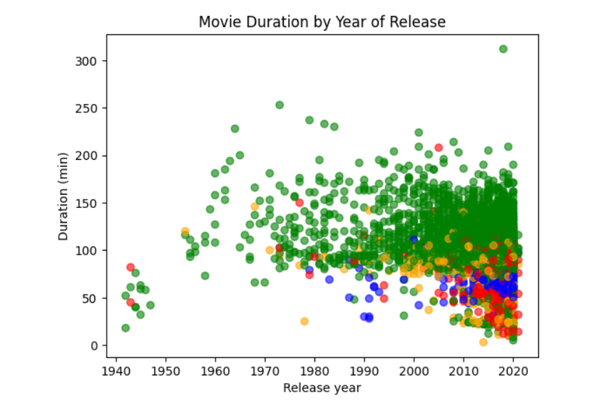

Python project on DataCamp: Investigating Netflix Movies
(Pandas and Matplotlib)
Utilize the core competencies gained from the "Introduction to Python" and "Intermediate Python" courses to manipulate and visualize Netflix data.
netflix_data.csv
- show_id The ID of the show
- type Type of show
- title Title of the show
- director Director of the show
- cast Cast of the show
- country Country of origin
- date_added Date added to Netflix
- release_year Year of Netflix release
- duration Duration of the show in minutes
- description Description of the show
- genre Show genre
Exploratory data analysis on the netflix_data.csv data:
- Load the CSV file and store as netflix_df.
- Filter the data to remove TV shows and store as netflix_subset.
- Investigate the Netflix movie data, keeping only the columns "title", "country", "genre", "release_year", "duration", and saving this into a new DataFrame called netflix_movies.
- Filter netflix_movies to find the movies that are strictly shorter than 60 minutes, saving the resulting DataFrame as short_movies; inspect the result to find possible contributing factors.
- Using a for loop and if/elif statements, iterate through the rows of netflix_movies and assign colors of your choice to four genre groups ("Children", "Documentaries", "Stand-Up", and "Other" for everything else).
Save the results in a colors list. Initialize a matplotlib figure object called fig and create a scatter plot for movie duration by release year using the colors list to color the points and using the labels "Release year" for the x-axis, "Duration (min)" for the y-axis, and the title "Movie Duration by Year of Release". - After inspecting the plot, answer the question "Are we certain that movies are getting shorter?" by assigning either "yes" or "no" to the variable answer.
import pandas as pd
import matplotlib.pyplot as plt
netflix_df = pd.read_csv('netflix_data.csv')
netflix_subset = netflix_df[netflix_df['type'] != 'TV Show']
netflix_movies = netflix_subset[['title', 'country', 'genre', 'release_year', 'duration']]
short_movies = netflix_movies[netflix_movies['duration'] < 60]
colors = []
for lab, movie in netflix_movies.iterrows():
if movie['genre'] == 'Children':
colors.append('orange')
elif movie['genre'] == 'Documentaries':
colors.append('red')
elif movie['genre'] == 'Stand-Up':
colors.append('blue')
else:
colors.append('green')
fig = plt.figure()
plt.scatter(x = netflix_movies['release_year'], y = netflix_movies['duration'], c = colors, alpha = 0.6)
plt.xlabel('Release year')
plt.ylabel('Duration (min)')
plt.title('Movie Duration by Year of Release')
plt.show()
duration_by_year = netflix_movies.groupby("release_year")["duration"].mean()
plt.plot(duration_by_year)
plt.xlabel('Release year')
plt.ylabel('Average Duration (min)')
plt.title('Average Movie Duration by Year of Release')
plt.show()
answer = 'no'
